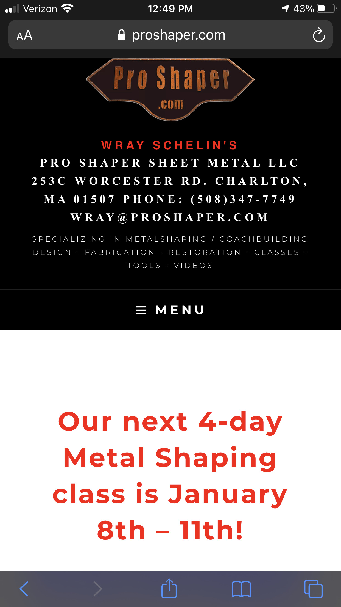
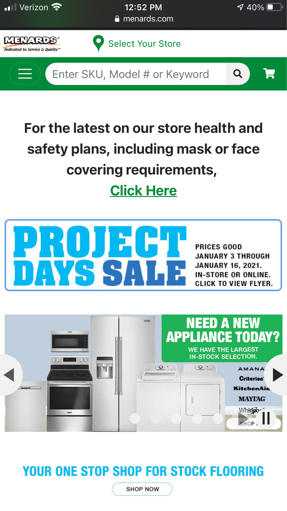

Contrast
Pro Shaper Sheet Metal LLC.
proshaper.com This site shows good contrast with its use of black and white with pops of red and orange. It's very easy to read, even from a distance.
Repetition
Menards
menards.com This site shows good repetition with its repeating use of the color green. This repetition ties together a lot of elements which would be otherwise un-related.
White Space
Platinum Tools
platinumtools.comThis site shows good use of white space. The individual offerings have enough breathing room and it's easy to examine each one, even in grid view.